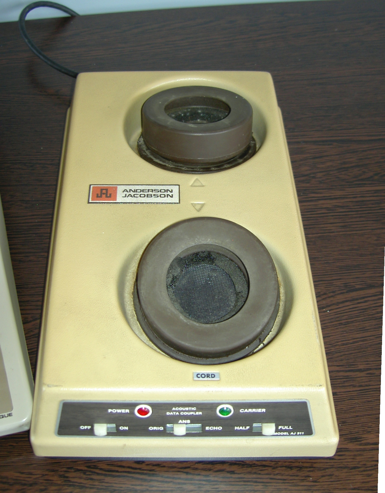

Se connecter à la toile
De nos jours, avec la fibre ou la 4G, les formats de transmission des données sont opérés de manière numèrique de boût en boût, avec des 0 et des 1.
L'époppée de l'internet commence en 1950, lorsqu'IBM met en fonctionnement les premiers modems pour le dispositif SAGE, le système de défense aérien des Etats-Unis. Mais celui-ci était destiné à un usage très privé.
Dans les année 1980, Dieu (non, une équipe d'ingénieurs) concu une boîte plus ou moins étonnante qui se connecte au réseau téléphonique commuté (analogique). Elle est pourvue de deux orifices, le premier contient un haut-parleur et le second un microphone
- Le haut-parleur : il permet d'envoyer des signaux sonores analogiques, on ne parle pas ici de 1 et de 0 mais bien de fréquences audibles permettant de composer un numéro, demandé par l'ordinateur et d'envoyer les données
- Le microphone : il autorise la communication dans les deux sens, il "écoute" les données renvoyées par l'utilisateur distant
Plus tard, les modems deviendront plus compacts, seront connectés avec un câble RJ-11 (le téléphone pourra rester sur sa base) et il pourra même être intégré dans les ordinateurs personnels.
Un modem acoustique